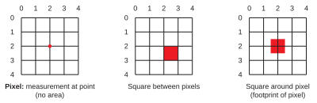
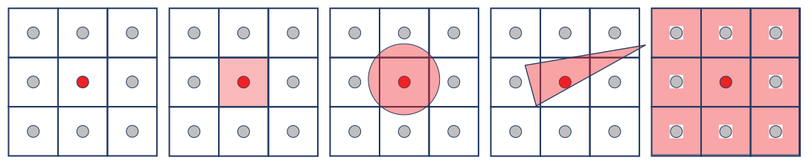
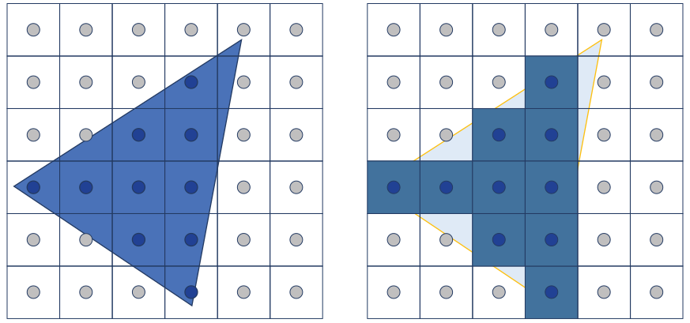
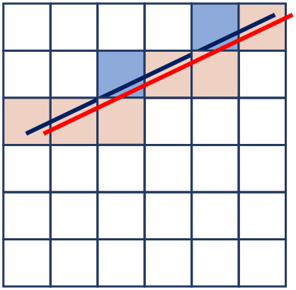

Page 3: Some Foundations
Over the next few pages, we will explore one of the most fundamental challenges in computer graphics: how we handle the fact that we are trying to fit a potentially infinitely complex world into a finite number of pixels.
This topic is not theoretical: the discrete nature of pixels causes real problems and limitations. When we create a discrete representation of the world, we lose information. We often refer to the problem as aliasing, although that term technically refers to a specific problem.
The real world is continuous. Time is continuous. Between any two events (e.g. measurements) there are more times. Space is continuous. Between any two positions, there are more positions. Objects can be infinitely small (OK, not really - there are limits of particle physics, but for practical purposes …).
Computers are discrete: because we use binary, we really can only represent integers. Because we (usually) use fixed-size discrete representations, we can only approximate continuous phenomena. Displays are discrete: we have a finite set of pixels that we get to control.
This problem is fundamental. And limiting. Because the real world is continuous, the amount of information it might take to represent any piece of it is infinite. If you take any fixed set of measurements, you might miss something that happened “in between” those measurements. This happens in 1D (for example, in making measurements of sound). And it happens in 2D - we have a finite set of color measurements, so we cannot represent the infinite complexity that could have possibly happened, even in the small part of the world that we are looking at.
A Simple Way to Think About It: Information Loss
Here is a picture of some sunflowers that I used as a texture map in a previous demonstration. Because I needed the image to be small to fit in the workbook, I only gave you a small version (64x64 pixels).
{kind=link}
Here’s a bigger version. It is 256x256. There are 16 times as many numbers, so there is more information.
{kind=link}
Did you notice the bees? They are barely big enough to be seen (and are not big enough to be seen in the 64x64 image).
In the bigger version of the image, you can clearly see there are bees - they are now bigger than a pixel, so you can tell that they are insects, not just blotches on the flowers. (click on the image to see it “full sized”).
{kind=link}
Even this doesn’t provide enough information. If we had more pixels we could have more information about the bees. The original image The image is available here and is CC0, however you need to pay for higher resolutions. has more pixels.
The basic idea
With a fixed number of pixels, we are limited in the amount of information we can represent. We need to be realistic about what we can do with the number of pixels we have, and use them effectively.
What is a pixel?
A pixel is the measurement of the image at a specific location.
It is a single value (usually a color, but sometimes we measure brightness or depth) at a specific location. The important thing is that it is at a particular place - it has no area, it is the measurement at exactly one location.
The technical term for this is a point sample.
Because a pixel only measures one location, it can only have one value (the value at that location).
Often, we have regular grids of pixels. In this case, the pixels are still points - we can have squares between the pixels (or squares around the pixels), but the pixels themselves have no area - they are specific positions.
{kind=link}

Why this and not…
This definition of a pixel as a point sample might seem odd. And, when we start to see the fundamental problems of discrete representations, you might wonder “wouldn’t this be easier if we defined pixels differently?”
The short answer is no. Treating pixels as point samples makes sense mathematically, and allows us to describe all of the other “models” (or ways of thinking about pixels) in a more rigorous manner. If we choose a different definition, we end up with the same problems, except that it is hard (or impossible) to describe them precisely so we can understand how to address them.
For example, it is tempting to think of a pixel as a little square. This doesn’t solve the information problem (we can only have one color for the entire area); we still lose details of what happened in the square, etc. The problems we will see on the next page (things happening between pixels) get replaced with different versions of the same problem (mis-representing things inside of the square).
Aliasing
The fundamental problem of a discrete representation (or many kinds of information reduction): many different continuous (non-reduced) sources get reduced to the same answer.
When we sample a continuous image, we only get the values at the sample points. There are infinitely many possible things that might have been sampled to produce that result. Those different possible things are aliases of each other.
Here’s an example: we have one dark pixel, and 8 light pixels. We know these 9 values, but there are an infinite number of images that might have caused them.
{kind=link}

The problem with aliasing is that if all you have are the samples, you have to guess at which of the possible source images (aliases) might have caused it.
You might wonder, how does this cause problems in practice? And, once you’re convinced it is a problem, what are we going to do about it?
Aliasing causes all kinds of problems.
The Famous Problem: Jaggies
If you try to draw a smooth edge, you are likely to get a jagged stair step.
{kind=link}

Notice that the smooth triangle and the blocky thing are aliases of each other: each one would be sampled to the same set of pixels.
It is tempting to try to come up with an ad hoc solution to this important problem. But, instead, by understanding the fundamental issue (aliasing), we can devise principled solutions.
While jaggies are ugly by themselves, they tend to lead to other problems. We’ll see examples on the next page.
But, here’s a famous one. Let’s imagine making stripes. We’ll start by taking a square and making 10 stripes. Notice how the patterns of jaggies create other patterns.
{kind=link}
{kind=link}
{kind=link}
{kind=link}
What’s weird is that this effect is difficult to predict or control.
{kind=link}
{kind=link}
{kind=link}
{kind=link}
Similar numbers of stripes can lead to very different patterns.
Aliasing is a problem not just because it is often ugly, but because it is uncontrollable, unpredictable, and inconsistent. Combatting aliasing is about trying to ensure that things remain consistent.
Checkerboard Downsampling
Even simple operations like making an image smaller can produce aliasing. Consider a 1 pixel checkerboard pattern that we want to shrink by a factor of 2. If we simply pick every other pixel (point-sample the downsized grid), the result depends critically on which pixels we pick. Taking the even-numbered pixels gives one result; taking the odd-numbered ones gives a completely different result. Downsampling a checkerboard by picking every other pixel. Whether we start on an even or odd pixel completely changes the result — a failure of consistency.

1x1 checkerboard reduce size by a factor of two. Picking even or odd pixels gives a very different result. Pre-filtering avoids the problem.
This is aliasing in its purest form: the sampling rate is too low to capture the pattern, and the result is unpredictable.
Note that the desireable result - getting a color that is the average of the colors - is not possible if we downsample first.
Crawlies
The inconsistency of aliasing becomes worse during animation: each frame might have different artifacts, and the motion between those artifacts can be very distracting.
A common form of this is the crawlies. Yes, that is a technical term. When an aliased edge moves, the jaggies will move - often differently. Sometimes in a completely different direction. We’ll see a vivid demonstration of this soon, but a classic one for now:
{kind=link}

The line moves slightly to the right (from blue to red), but it appears to move down by a lot.
Summary: The Fundamental Problem
The discrete representation of pixels is a fundamental problem. It can’t be fixed. The solution will be to understand the problem, and be realistic about what we try to do with a limited number of pixels.
On the next page, we’ll introduce the key ideas using a simplified explanation.
Next: Page 4 - Aliasing